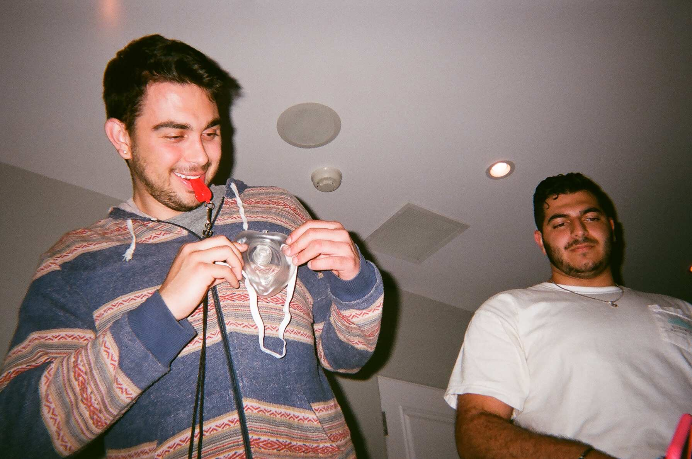
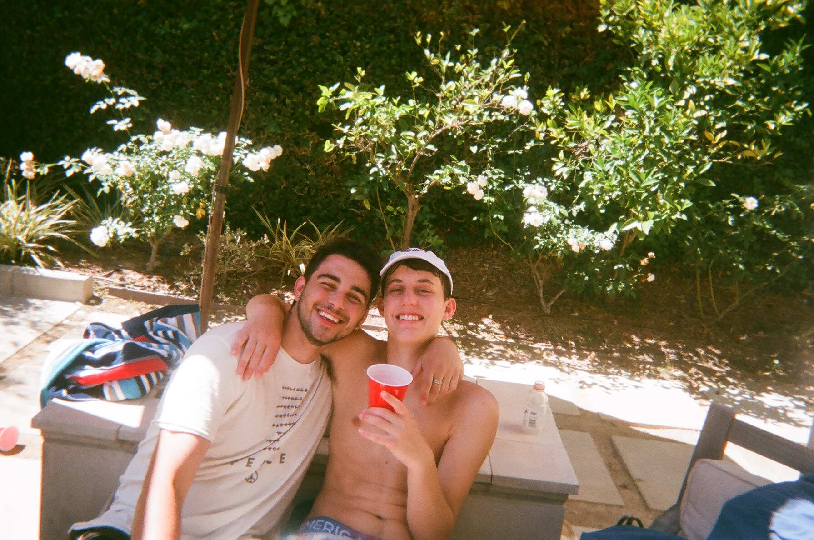
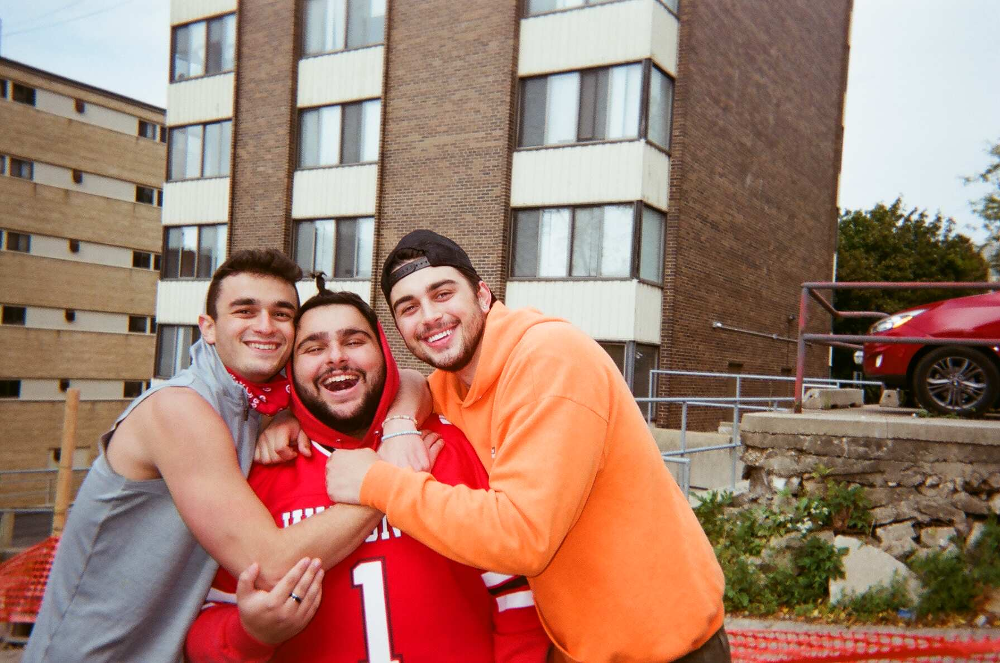
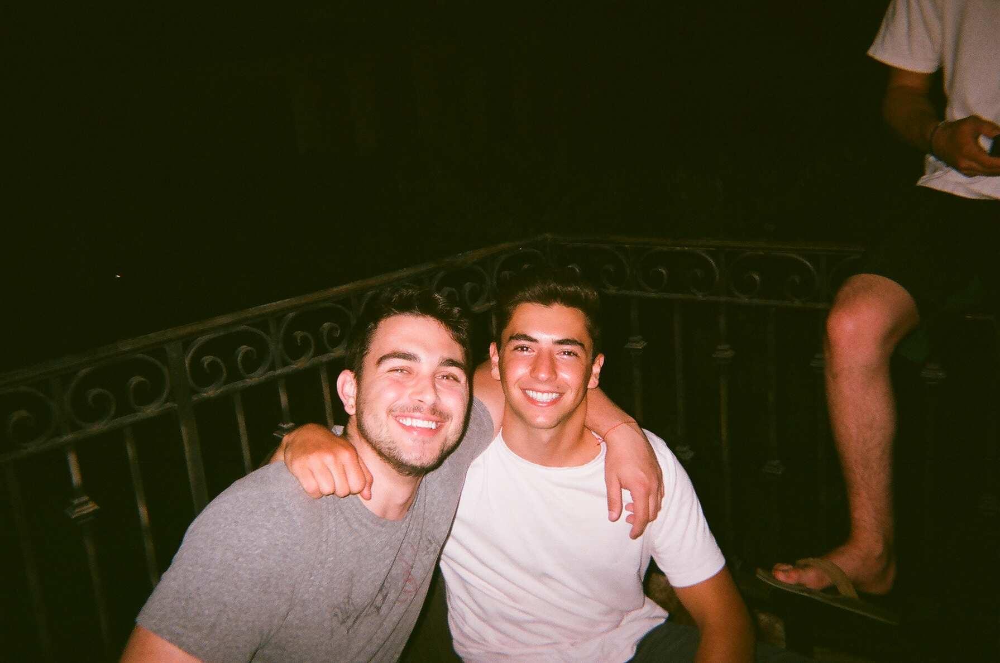

My name is Jarred Asars and I am a junior at the University of Wisconsin-Madison. Over the years, I have grown a passion for photography and have found it especially interesting how my generation uses it.
I believe that photography is a very expressive art form that gives people the ability to capture a moment in time that is permanently frozen. No matter how long ago it was, a photo is able to freeze a moment and allow other's to see exactly what was happening in that moment.
Time continues to move faster and faster as the years go on and to make sure I commemorate these moments throughout my time, I love taking pictures with friends of mine. Here are a couple to show.
   